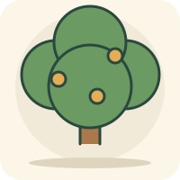

इंद्रिय बिंब
Sensory imagery
Audio uses your device’s Hindi voice; availability varies. No native recordings included.मुख्य अवधारणा
Understand the conceptबिंब पाठक की कल्पना में संवेदनात्मक अनुभव रचता है। बिंबों की संख्या से अधिक उनका अर्थपूर्ण चयन महत्वपूर्ण है।

शब्द और अर्थ
Vocabularyदृश्य
visualश्रव्य
auditoryघ्राण
olfactoryस्पर्श
touchआस्वाद
tasteइंद्रिय बिंब
Visual analysisघंटियों की ध्वनि
सुनना।
सभी रूप देखें
- श्रव्य: घंटियों की ध्वनि — सुनना।
- घ्राण: मिट्टी की गंध — सूँघना।
- स्पर्श: बर्फ की ठंडक — छूना।
विश्लेषण प्रयोगशाला
Analysis labसही विकल्प चुनें और पाठगत या भाषिक कारण पढ़ें।
मिट्टी की गंध
उत्तर और कारण
घ्राण बिंब — गंध घ्राण इंद्रिय से जुड़ती है।
उदाहरण और पठन
Examples & readingगीली मिट्टी की गंध फैल गई।
दूर घंटियों की धीमी ध्वनि आई।
बर्फ की ठंडी धार हथेली पर पिघली।
बोलें और सोचें
Apply itएक ही सुबह का वर्णन तीन इंद्रियों से करें।
लेखन अभ्यास
Writing practiceइंद्रिय अनुभव भाषा को मूर्त बनाता है।
इंद्रिय अनुभव भाषा को मूर्त बनाता है।
उदाहरण का विश्लेषण करें, फिर अपना स्वतंत्र उत्तर प्रमाण सहित लिखें।
स्वतंत्र लेखन कक्ष
Writing workspace0 शब्द
निजी जानकारी न लिखें। मसौदा सहेजना वैकल्पिक है; कोई सर्वर या स्वचालित मूल्यांकन नहीं।अपना ज्ञान जाँचें
Check your learningघंटियों की ध्वनि किस बिंब का उदाहरण है?
उत्तर देखें
श्रव्य बिंब।
इस पाठ में दिए गए अर्थ से शब्द मिलाएँ: visual
उत्तर
दृश्य
कार्यपत्रक · Worksheet
Completion is self-marked and saved locally.